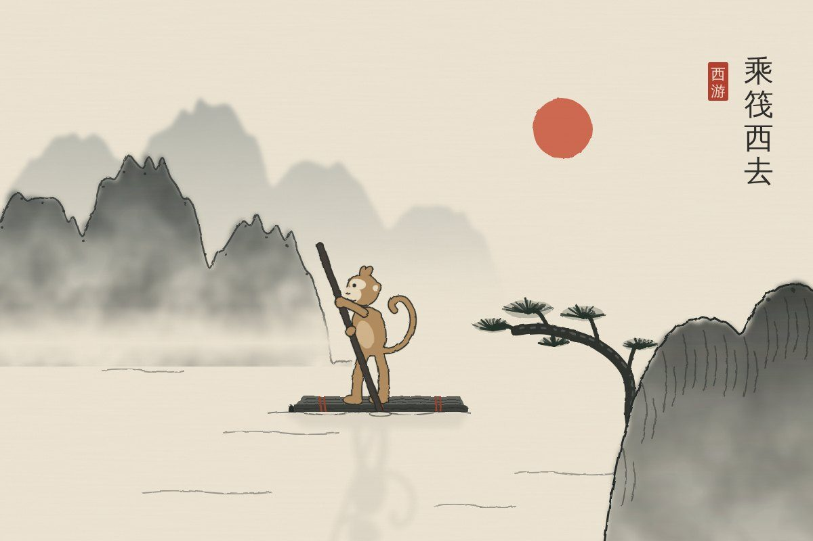
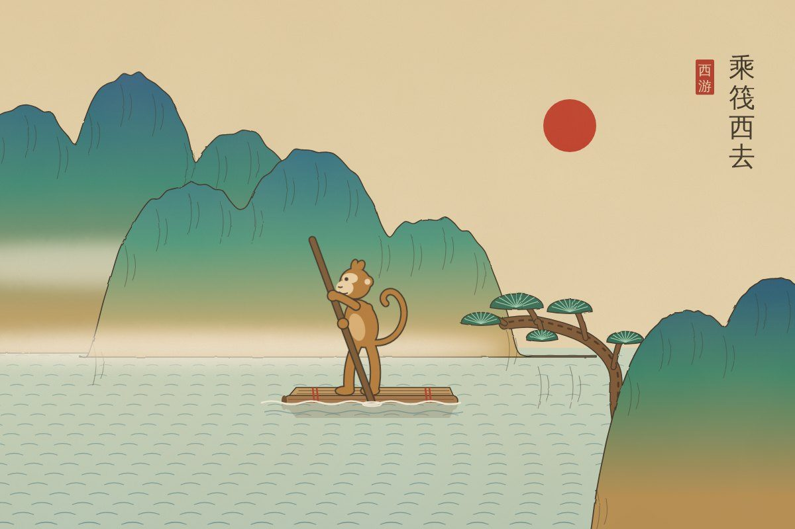
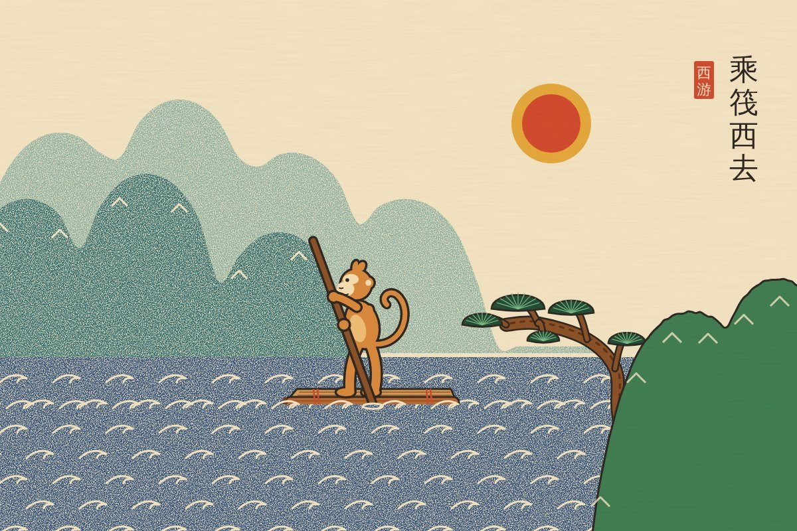

Одна и та же сцена в трёх стилях: каменная обезьяна уходит на плоту на запад, позади — сосна на скале её родной Горы Цветов и Плодов, впереди — горы, в которых она будет искать учителя. Все три стиля взяты из китайской живописи и печати. Выберите один (или смесь), и по нему будут нарисованы герои, сцены глав и карта.
Это эскизы стиля: важны манера, цвет и то, как картинка держится на экране телефона. Лицо и поза Укуна будут проработаны отдельно, когда стиль выбран. В приложении ничего не менялось.

Тишина, даль и туман. Горы растворяются в бумаге, вода — это пустота. Цвет почти только в солнце, печати и в тёплом охристом Укуне: глаз сразу находит героя.
Классика китайского пейзажа: маленький путник в огромном мире. Каждая глава может начинаться с такого вида — где он сейчас и куда идёт.
Сцены в пещере и во дворце (учёба, Нефритовый император) в туши выходят тёмными и строгими; детям может не хватить тепла. В тёмной теме бумажный фон картинки будет ярким пятном.
He sails west on a raft, alone.

Сказочно и празднично: лазурные вершины переходят в малахит и охру, море нарисовано тонкими волнами, всё обведено тонкой линией. Тепло старого шёлка.
Так в Китае рисовали волшебные горы и бессмертных — ровно мир 西游记. Стиль держит и пейзаж, и подробную сцену с героями: в пещере, во дворце, на облаке.
Самый трудоёмкий: тонкие линии и градиенты в каждой сцене. На маленьком экране детали волн и штрихов сливаются, поэтому герой должен быть крупнее, чем в туши.
He sails west on a raft, alone.

Ярко и по-детски: плоские цвета, жирный контур, море из завитков волн, крапинки краски, как на оттиске. Весело и читается с одного взгляда.
Народная картинка — то, как 西游记 знали дети и на ярмарке. Лучше всех держится на маленьком экране и в карточках слов: силуэты простые, цвета яркие.
Меньше атмосферы: нет тумана и дали, ночь и рассвет передаются только цветом. Самый «простой» с виду, легко скатиться в плакат.
He sails west on a raft, alone.
Прошлые картинки выглядели собранными из деталей, потому что предметы ставились «рядом» и не касались друг друга. Здесь каждый предмет ставится от того, что его держит, и это правило будет действовать во всех сценах.
Нижняя половина бревна скрыта под линией воды, под плотом — отражение и рябь. Плот сидит в море, а не лежит на картинке.
Шест — одна прямая; обе кисти посчитаны точно на ней. Под водой шест обрезан, на месте входа — кольцо ряби.
Корень уходит за край скалы, каждая шапка хвои — на конце своей ветки, каждая ветка начинается на стволе.
Основания гор уходят в туман или в воду, туман лежит между слоями гор, а не плавает отдельными облачками. Облака — только в небе и только там, где они облака.